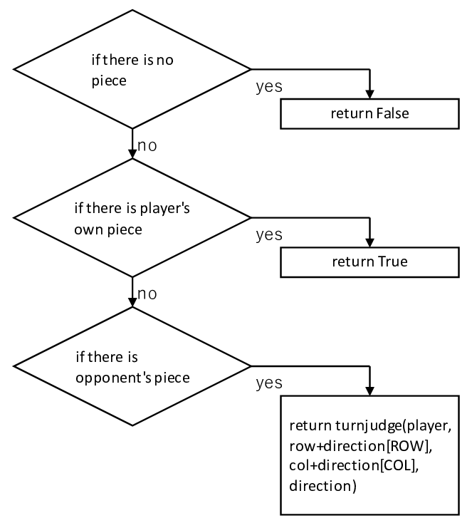
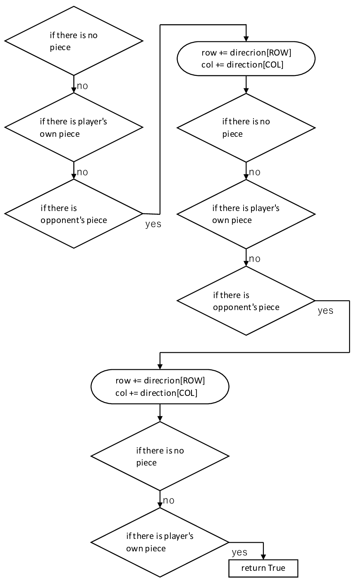
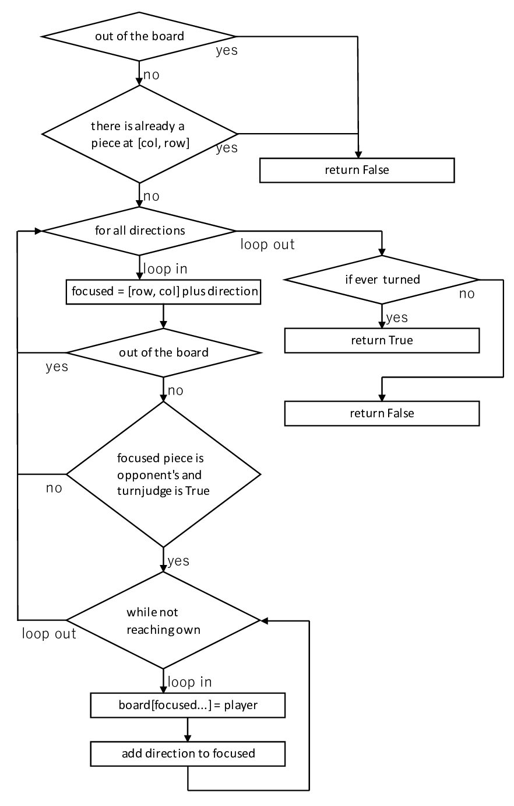

Stage 4 石を裏返す
みなさま、ようこそ。リバーシのプログラミング第 4 ステージです。リバーシは石を裏返してナンボです。今回は裏返せるか判別し、そして実際に裏返す機能を作ります。
このステージでは再起処理が出てきます。慣れれば大したことはないんですが、初めてですと本当に混乱しますので、経験のない方は一度ほかの方の説明などを受けていただいて簡単な例をみてきてください。圧倒的に理解が変わりますし、何より自分で実装できるようになります。
目次
4-1 裏返せるか判別する機能の指針
ここから先は Board クラスの turnjudge メソッドに入ります。まず player が石を置いたら direction 方向の隣のマスを [row, col] に代入します。そして置いた石から direction の方向に石を裏返せるか否かを bool 型でリターンします。
使い方はこうです。まず [R, C] に player が石をおく場合を考えてみましょう。まず board[R+direction[ROW]][C+direction[COL]]==-player を確かめます。つまり隣が相手の石かどうか。相手の石なら turnjudge(player, row+direction[ROW], col+direction[COL], direction) の値を見ます。True であれば [R, C] に石を置いたとき、direction の方向は石を裏返せます。False ならその方向の石を裏返すことできません。石を置けないんじゃないんですよ。その方向が裏返せないだけです。いいですか、
置けないんじゃないんです。
では turnjudge はどんな時に True を返しどんな時に False を返せばよろしいんでしょうか。まず、上で確認しましたが turnjudge を呼び出す時点で「自分が石を置くマスの direction 側の隣には相手の石がある」のは確定です。例えば player が ● で direction が右なら
● ○ ...
という状況であることは確定です。turnjudge の引数である row, col は、最初 ○ の位置を指しています。では、どのようにしたら右の石を裏返せることがわかるか。私の答えはこうです。

- もし石が ○ なら、もう一つ隣をみればいい
- もし石が ● なら、置いたところから全部裏返せる
- もし石がないなら、右側へ裏返すことはできない
意味わかりますか。例えば direction が右であって、状況が下のようになっている場合を考えてみましょう。player は ● で左端に石を置いた場合です。
● ○ ○ ●
まず最初に turnjudge の引数に入れるのは左端の ● のすぐ隣にある ○ です。これが ● にとっては相手の石なので、row, col を調節して右の ○ を指すようにします。これもまだ相手の石なので、もう一つ右に row, col を移動させます。今度は ● つまり player にとって自分の石に行き当たりましたので、player は石を置いた場所から右にある相手の石を裏返すことができます。もし自分の石にたどり着くことなく、何も置いていないマスに出くわしたり盤面の端に行き着いたりしてしまったら、当然裏返すことはできません。これを無理やりフローチャートにするとこんな感じでしょうか。
4-2 裏返せるか判別する機能の実装
さて、4-1 の指針をもとに実際にコーディングしましょうか。まず row と col が board のインデックスにして問題ないかを InBoard で確認します。当然アウトなら False をリターンです。
その後に piece という値に [row, col] の石の色を格納します。この先は piece によって条件分岐します。
まずは piece が EMPTY つまり [row, col] に何も置いていない場合です。これでは石を裏返すことはできませんでしたよね。ですから False をリターンします。
piece が player の場合、自分の石にたどり着いたことになりますから、石を置いたところから direction の方向に裏返すことができます。したがってリターンは True ですね。
piece が -player つまり [row, col] にまだ相手の石がある場合は、もう一つ隣を見るんでしたね。隣というのは direction の方向ですから、row -> row + direction[ROW], col -> col + direction[COL] と変換して turnjudge を発動させます。この値が True であれば自分の石にたどり着いたことになりますし、False ならたどり着けなかったというわけです。ですから turnjudge(player, row+direction[ROW], col+direction[COL], direction) をリターンするんです。
piece がそのほかの値をとったら、そのマスに石がないわけでもないし石が白いわけでも黒いわけでもないという、まったく奇妙な状態になっています。こんなもの我々には手に負えませんから、エラーということで False を返します。
4-3 裏返す機能の指針
ここから先は turn メソッドへと移りましょう。文字通り石を裏返す機能です。引数は player が [row, col] に石を置いたことを意味します。
メソッドでやることはこうです。まず置いた石から 8 方向すべての隣のマスを見渡し、相手の石を探します。方向が direction で相手の石が隣に現れたとき、その石の座標つまり [row + direction[ROW], col + direction[COL]] を turnjudge に入れます。結果 True がリターンされ direction の方向の石を裏返せることがわかったら、今度は [row, col] から自分の石にたどり着くまですべてのマスの board の値を player に書き換えていきます。これをすべての方向でやったら、最後 board[row][col] = player としておしまいです。
まあ、フローチャート見せればこの説明いらないんだろうけど。では実際にコーディングしていきましょう。
4-4 裏返す機能の実装
turn メソッドの最上部では row と col が盤面の中にちゃんと収まっているかを確認します。フローチャートの一番上のところですね。その次は [row, col] にすでに石が置かれていないかをみています。このうちどちらかでも引っ掛かったら当然 False をリターンすることになります。
下に行くと、4-2 で制作した turnjudge を使って裏返せる方向の石を片っ端から裏返しています。まず turned という bool 型変数に False を入れておき、focused を石を置くマスの隣のマスに合わせます。turned を用意する理由ですか？まだ分からなくていいですよ。どうせすぐに解説しますし。それで、focused に -player の石が置いてなければ、どうあがいてもその方向に石を裏返すことはできませんから、別の方向へ移ります。逆に相手の石が置いてあって、しかも turnjudge が True であれば、もう裏返されるのを待ってるようなものですから、while ループに入ってその期待に応えましょう。いやいや、turnjudge が False のときはって、そりゃ他の方向をみるに決まってるでしょうよ。何変なこと言ってんすか、おやっさん。
while 文の中では focused に引っ掛かったマスの board にことごとく player を代入していきます。ループ内部で turned を True にしているのは、あとで「ちゃんと石を裏返しましたよ」とアピールするためです。そして focused が自分の石のあるマスに到着したらループ脱出です。
さて、for ループも抜けたところで turned を確認しています。この時点では「しっかり石を裏返した場合」と「実は while ループに突入せず一度も石を裏返すことなく for 文を抜けてしまった場合」の両方が共存してしまっています。メソッド的には「ちゃんと裏返したよ」で True を、「いやいや、裏返してねーよ」で False をリターンさせたいんです。石一枚も裏返せないんだったら [row, col] に石置けませんからね。なので turned の値によってリターンする値を場合分けしてください。
次回予告
これで石を裏返すのと石を置く機能はもう出来上がったも同然です。ですがリバーシのルールには「石をどこにも置けない場合、プレーヤーはパスしなければならない」というのがあります。あんたまだその判別できないでしょ。
パスを判定するだけではありません。ユーザーは誰しも決着がついたとき「アンタの勝ちだ」とか「テメーの負けだ」とか言われないと気が済まないんですよ。ですからしっかりそれも言えるようになりましょう。